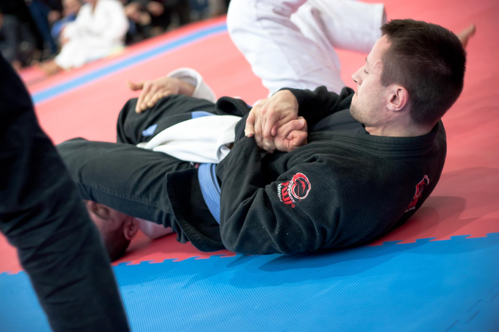

Brazilian jiu-jitsu (BJJ)is a self-defence martial art and combat sport based on grappling, ground fighting, and submission holds. BJJ focuses on taking ones opponent down to the ground, gaining a dominant position, and using a number of techniques to force them into submission via joint locks or chokeholds.

The term "choke" refers to a technique where a practitioner applies pressure to an opponent's neck in order to force them to submit. Chokes are a fundamental aspect of BJJ and can be executed from various positions, including the guard, mount, back control, and more.
